Mini Proyecto 1 · Día 1
🍻
BrewMaster
Evidencias de modelado de datos e inicio del CRUD
Estudiante: Alex Aguilar López
Curso: Desarrollo Web Full Stack
Docente: Barry
Fecha: 05-11-2026
Curso: Desarrollo Web Full Stack
Docente: Barry
Fecha: 05-11-2026
1. Evidencia del frontend
La interfaz React permite consultar y administrar las entidades principales del sistema empresarial BrewMaster.
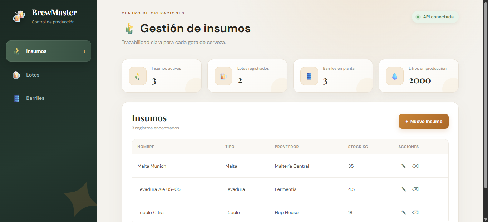
Figura 1. Dashboard y tabla de Insumos.
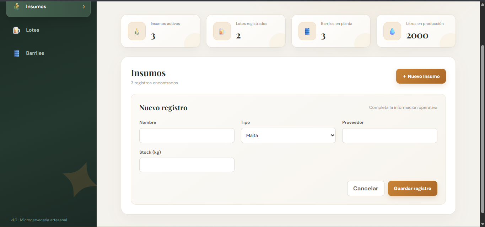
Figura 2. Formulario para crear un nuevo insumo.
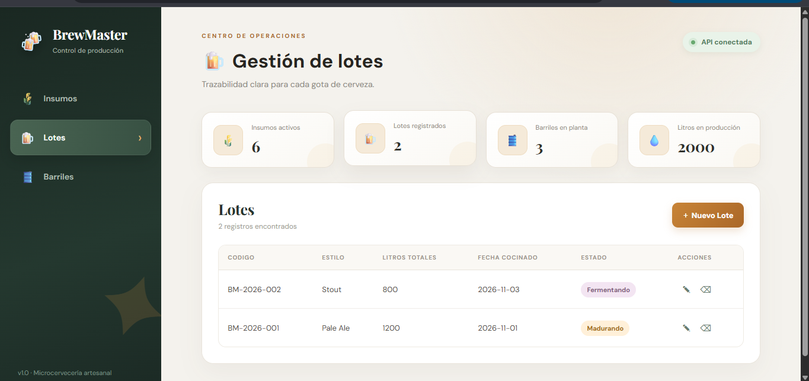
Figura 3. Gestión de lotes y estados de producción.
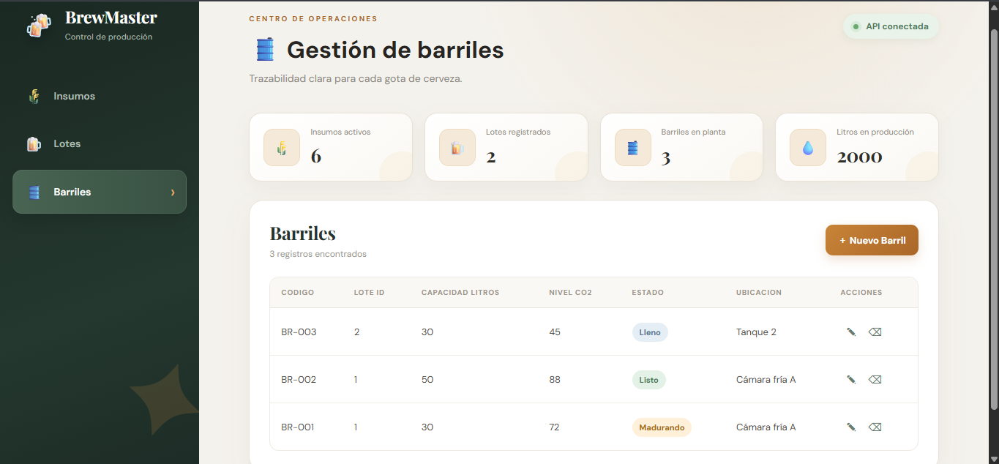
Figura 4. Gestión de barriles, CO₂, ubicación y estado.
2. Evidencia de la API REST
La API Node.js responde en JSON y fue probada con Postman.
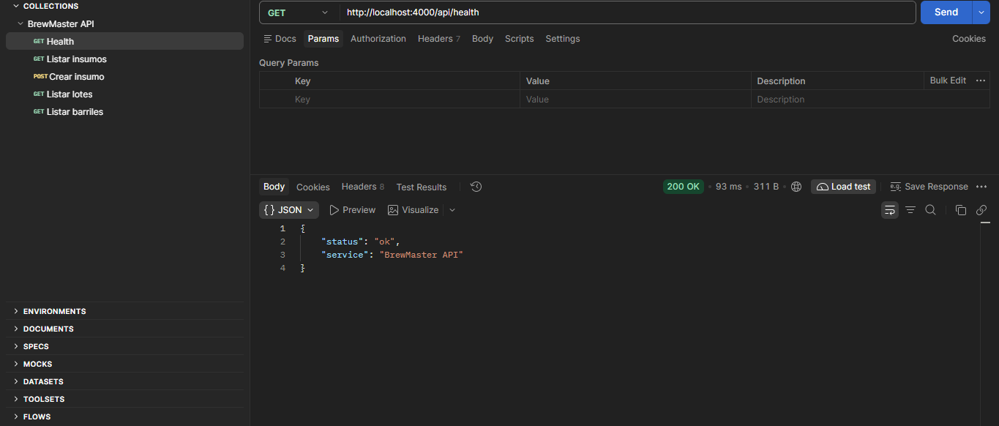
Figura 5. Health check de la API con respuesta 200 OK.
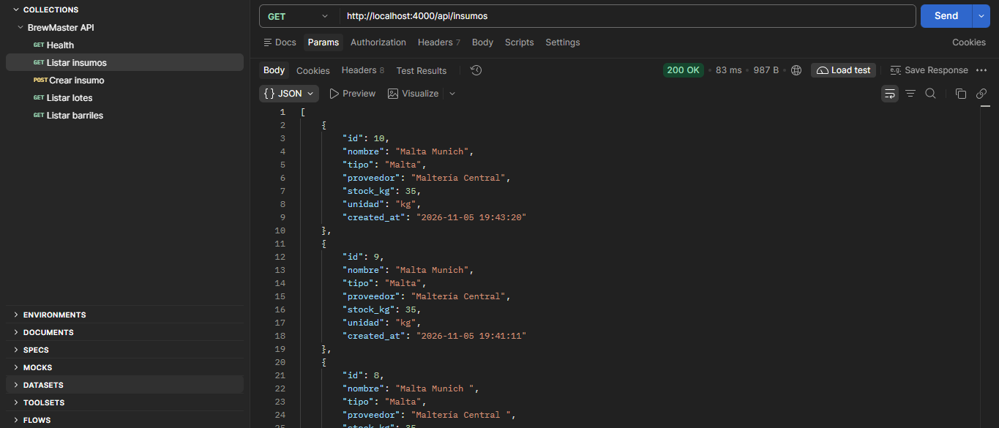
Figura 6. GET /api/insumos con respuesta 200 OK.
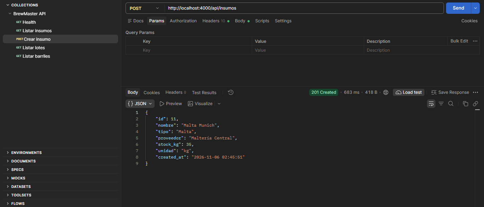
Figura 7. POST /api/insumos con respuesta 201 Created.
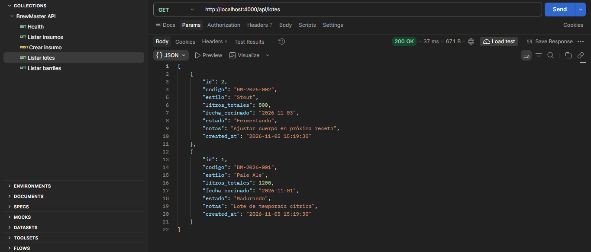
Figura 8. GET /api/lotes con respuesta 200 OK.
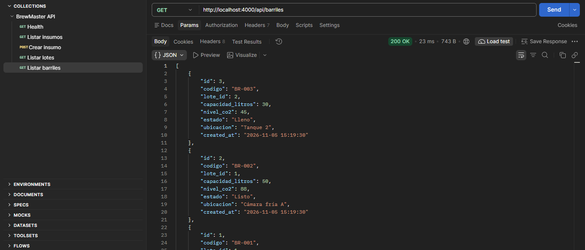
Figura 9. GET /api/barriles con respuesta 200 OK.
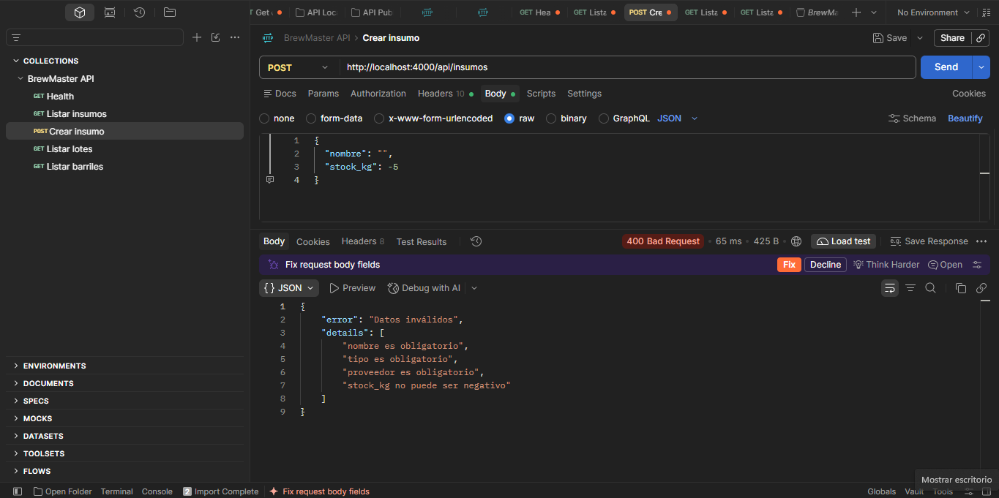
Figura 10. Validación del backend con respuesta 400 Bad Request.
3. Modelo entidad-relación
El modelo contempla Insumos, Lotes, Barriles y la tabla intermedia Lote_Insumos.
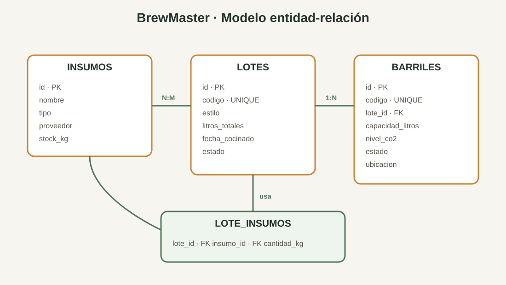
Figura 11. Modelo entidad-relación de BrewMaster.
4. Resultado de la entrega
BackendNode.js, Express, API REST y SQLite.
FrontendReact, Vite, formularios y tablas.
CRUDCrear, consultar, actualizar y eliminar.
ValidacionesCampos obligatorios, tipos y rangos.
✓ Pruebas de API ejecutadas correctamente · ✓ Build de React generado correctamente